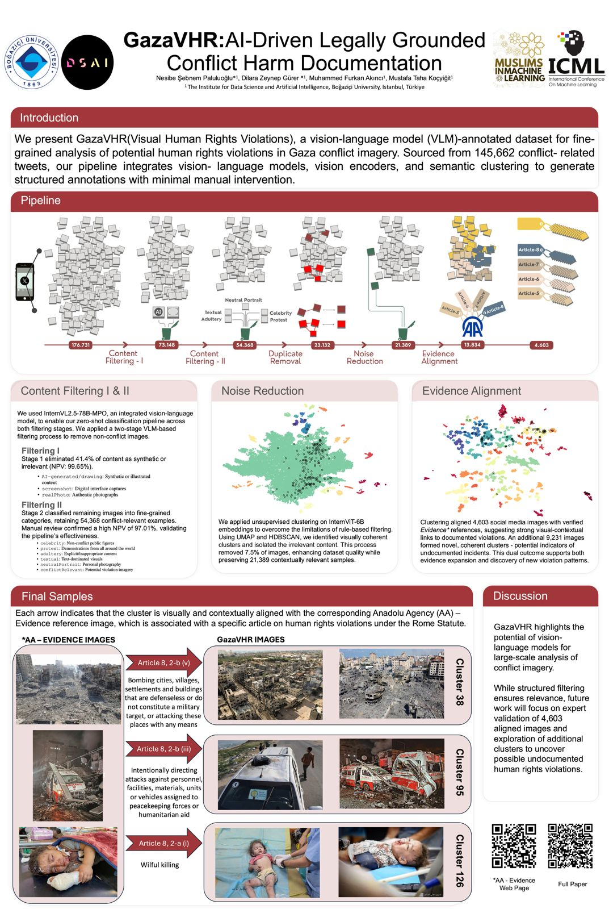
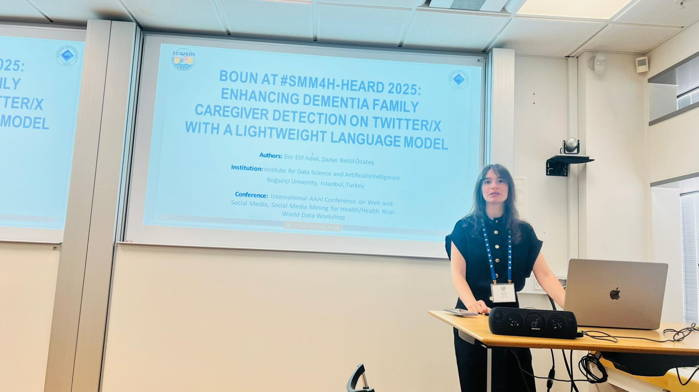

RESEARCH NEWS
See the latest research news from our Institute
RESEARCH NEWS: DSAI PhD Students' Research Accepted for Presentation at ICML 2025
The recent study titled “GazaVHR: AI-Driven Legally Grounded Conflict Harm Documentation”, co-authored by DSAI PhD students Nesibe Şebnem Paluluoğlu and Dilara Zeynep Gürer, together with our assistant professors Muhammed Furkan Akıncı and Mustafa Taha Koçyiğit, has been accepted for poster presentation at the 4th Muslims in ML (MusIML) Workshop, co-located with ICML 2025. The paper introduces GazaVHR, a novel AI-assisted dataset developed for the structured documentation of potential human rights violations in the Gaza conflict using advanced vision-language models. The dataset pipeline begins with over 170,000 images sourced from conflict-related tweets, applies consecutive filtering and semantic clustering techniques, and aligns the output with a legally grounded reference dataset based on the Rome Statute. The final output—4,603 likely high-confidence images—demonstrates the potential of AI in scalable and systematic humanitarian documentation. We gratefully acknowledge Adba Analytics for granting us access to the Twitter data that made this project possible.
(July 23, 2025)
RESEARCH NEWS: DSAI Student Wins First Place at 2025 SMM4H-HeaRD Shared Task on Health Data and Social Media Mining
RESEARCH NEWS: DSAI MSc student Ece Elif Adak achieved first place in the 3rd shared task of the 2025 Social Media Mining for Health Workshop (#SMM4H), surpassing the previous state-of-the-art performance. Her system earned the highest score in the task, which focused on automatically identifying English-language tweets reporting a family member with dementia. The 2025 Social Media Mining for Health Workshop was held in conjunction with the International AAAI Conference on Web and Social Media (ICWSM) in Copenhagen, Denmark, from June 23 to 26. SMM4H is an interdisciplinary workshop that brings together researchers working at the intersection of natural language processing, machine learning, and health informatics to analyze health-related content from social media and other web-based platforms. We warmly congratulate Elif on this outstanding achievement. The system description paper can be found in this link.
(June 30, 2025)